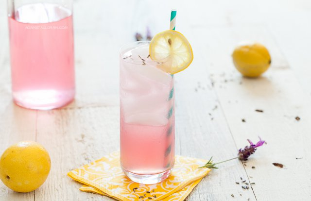

Lavender Lemonade

Description
Lavender lemonade is a tangy and sweet beverage made by infusing lemonade
with the flavor of lavender. Perfect for summer days, it provides a cool
and soothing refreshment with a delicate aroma and taste of lavender.
Ingredients
- 2 ½ cups water x2 (so 5 cups water total)
- 1 cup sugar
- Approx ¼ cup lavender blooms/culinary lavender buds
- 1 small tea bag to fit the lavender blooms in it
- 1 cup freshly squeezed lemon juice, strained or unstrained (if you like pulp)
Optional
-
If you don't have tea bags you can just pour the lavender buds into the pan and
let steep that way but you have to strain the solution later.
Steps
- Dissolve sugar in a sauce pan (or small pot) with 2 ½ cups water
- Once fully dissolved place the tea bag filled with lavender buds in the pan and let steep. I like to keep the heat on the pan for a while to get more flavor out of the buds
- Let steep for about an hour or two, in the meantime juice fresh lemons to obtain 1 cup of lemon juice. Depending on what you want to do with it, meaning if you like pulp then don't strain the lemon juice, if you don't like pulp, strain away!
- Once steeping is done, or to your liking, remove the lavender and discard. Pour solution into a pitcher. [What I did was steep the lavender in a nice cup of hot water and drank that until I went off to bed.]
- Add the 1 cup of lemon juice, then add another 2 ½ cups water. Stir, taste and add lemon juice or water to your preferred taste.
- Keep in fridge until ready to serve. Enjoy!